Bukit Harapan
Kota Parepare
Kota Parepare
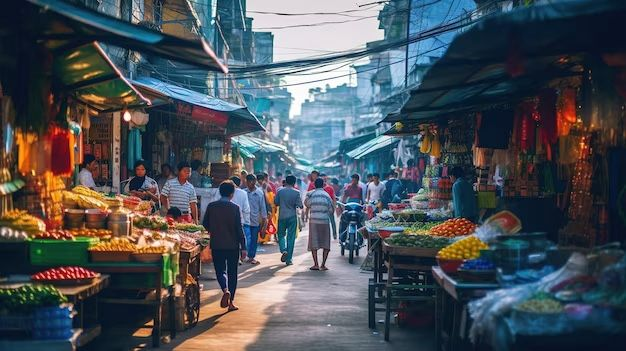
Temukan berbagai usaha mikro, kecil, dan menengah yang berkembang di Kelurahan Bukit Harapan.
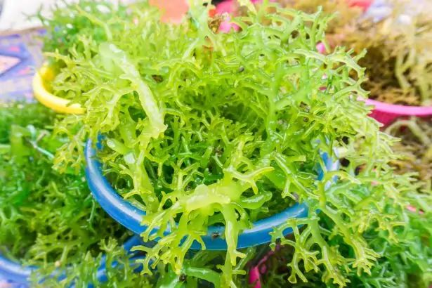
Pemilik: Abdul Rahman
Jenis Usaha: Budidaya Rumput Laut
Alamat: Jalan Lauleng
Telepon: 0852 8049 1126
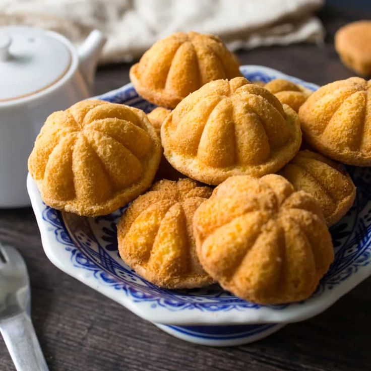
Pemilik: Murni
Jenis Usaha: Pembuatan Bolu Cukke
Alamat: Jalan Lauleng
Telepon: -
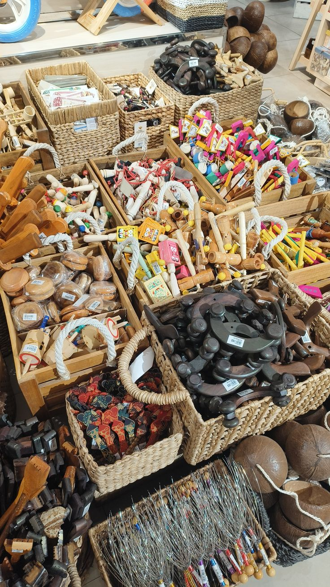
Pemilik: Mustafa
Jenis Usaha: Kerajinan Tangan
Alamat: Jalan Lauleng
Telepon: 0838 6257 3512
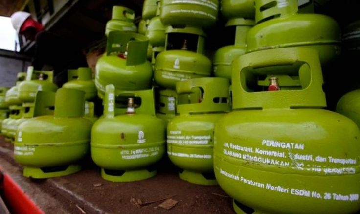
Pemilik: Muh. Arief A. Zainuddin
Jenis Usaha: Gas LPG 3Kg
Alamat: Jalan H. Laele
Telepon: 0813 4374 8292
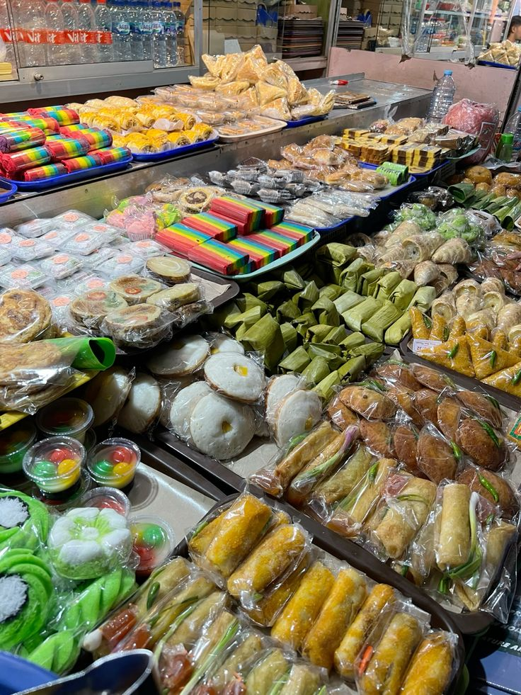
Pemilik: Suhaeni
Jenis Usaha: Pembuatan Kue
Alamat: Jalan H. A. Muh. Arsyad
Telepon: 0823 3737 3617
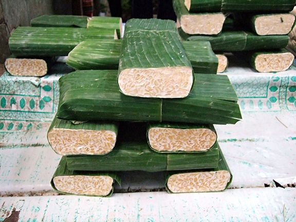
Pemilik: Mualim
Jenis Usaha: Pembuatan Tahu dan Tempe
Alamat: Jalan Kesadaran
Telepon: 0853 9835 9854
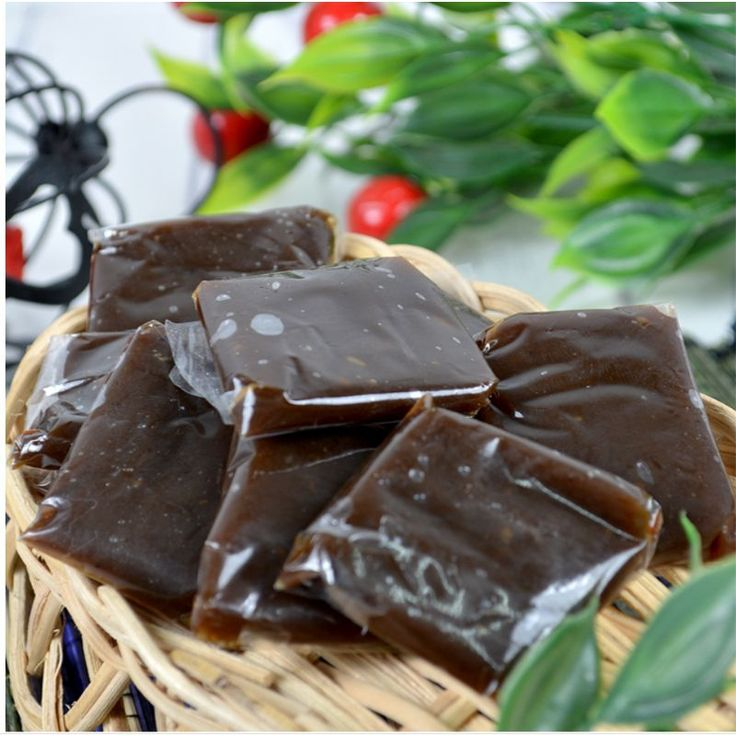
Pemilik: Nurjannah
Jenis Usaha: Pembuatan Dodol
Alamat: Jalan Laupe
Telepon: 0813 3722 7461
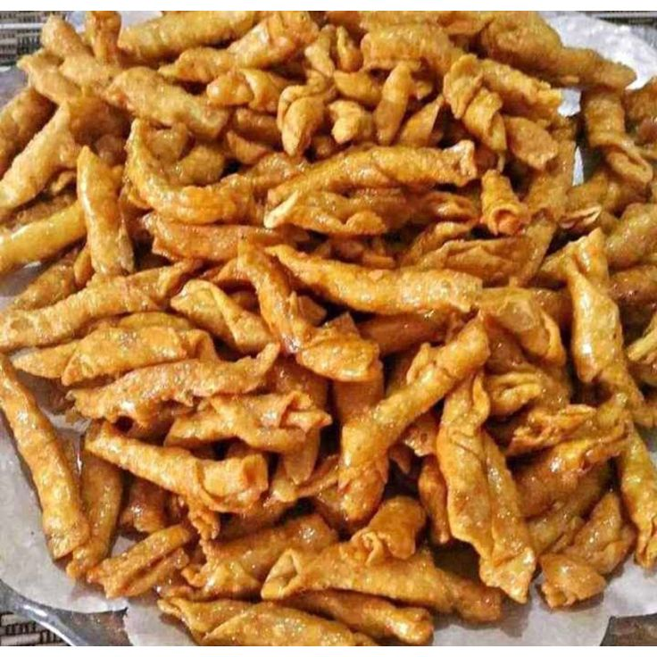
Pemilik: Raerawati
Jenis Usaha: Pembuatan Kacang Sembunyi
Alamat: Jalan Melingkar
Telepon: 0812 1638 6116
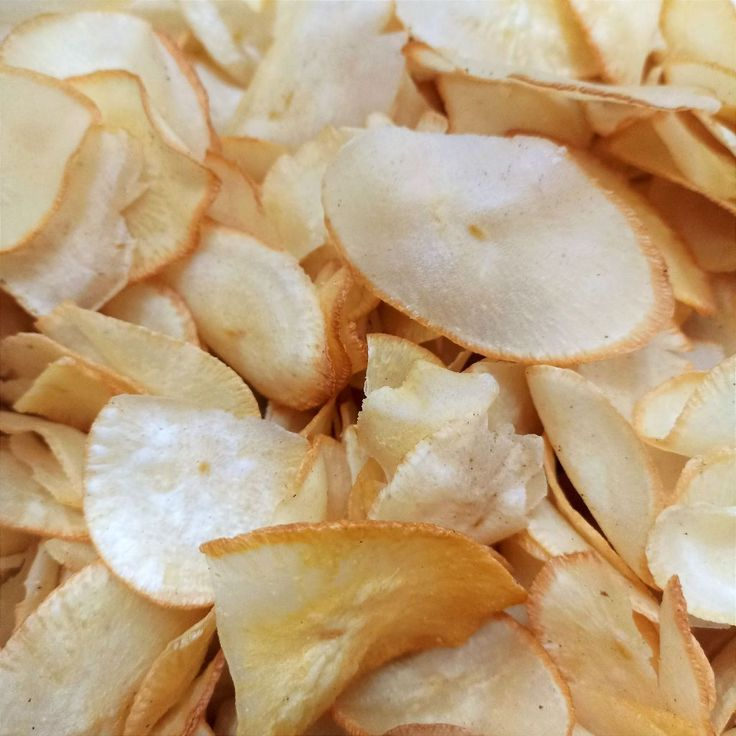
Pemilik: Ramlah Mustapa
Jenis Usaha: Pembuatan Keripik Ubi
Alamat: Jalan Laupe
Telepon: 0831 6603 9658
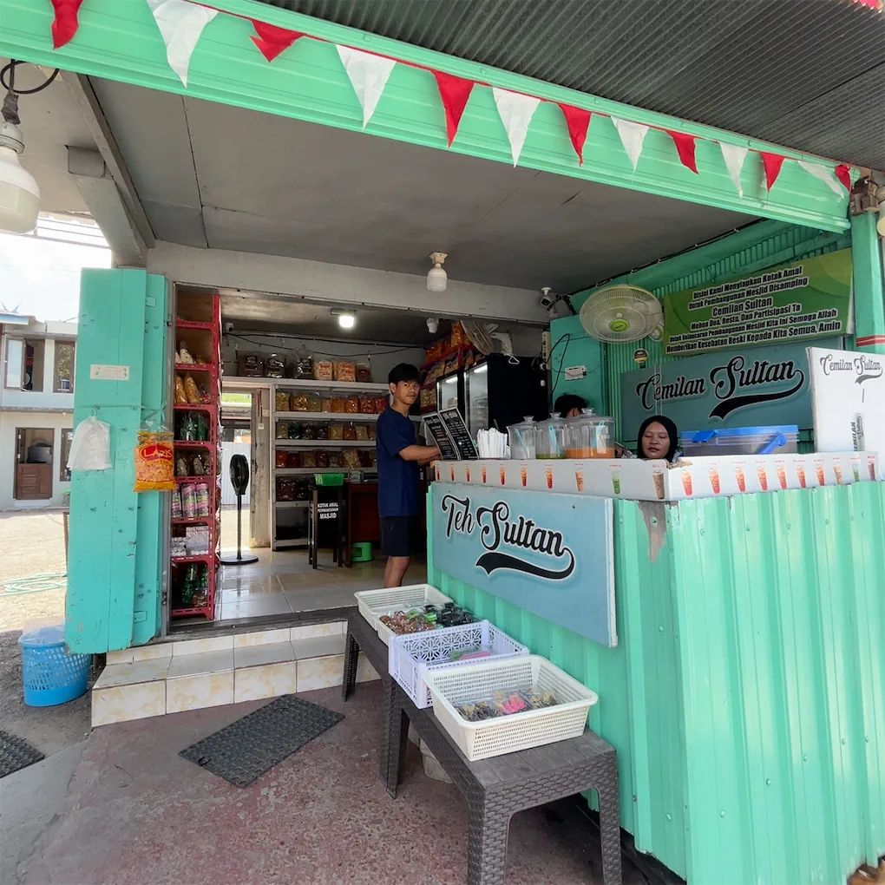
Pemilik: Haidir Pasak
Jenis Usaha: Pembuatan makanan ringan & minuman
Alamat: Jalan Drs. H. Muh. Yusuf Majid
Telepon: 0852 5552 9155
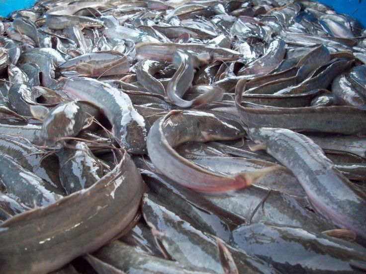
Pemilik: Bahriah
Jenis Usaha: Budidaya Ikan Lele
Alamat: Jalan Drs. H. Muh. Yusuf Majid
Telepon: 0853 4156 0677
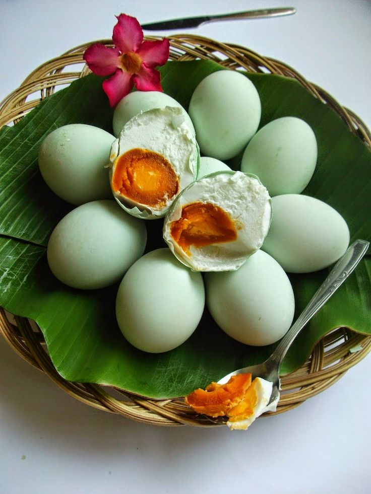
Pemilik: Nurdin
Jenis Usaha: Pembuatan Telur Asin
Alamat: Jalan Jenderal Ahmad Yani KM. 5
Telepon:085256229775
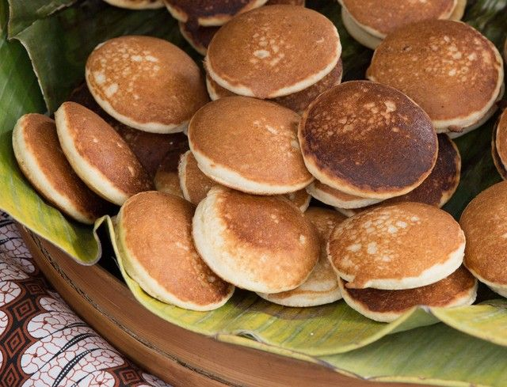
Pemilik: Sakka Matto
Jenis Usaha: Pembuatan Kue Beras
Alamat: Jalan Jompie
Telepon: 0852 9801 1503
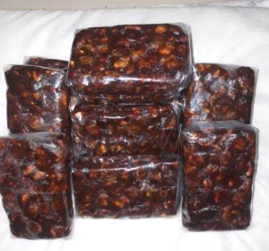
Pemilik: Fatahuddin
Jenis Usaha: Pembuatan Asam
Alamat: Jalan Taiba
Telepon: 0823 9605 9409
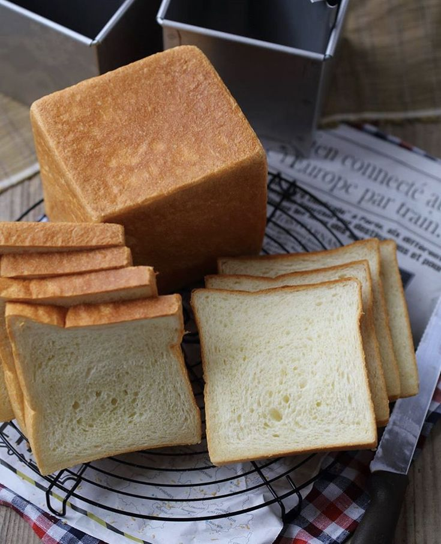
Pemilik: Yulianti
Jenis Usaha: Pembuatan Roti
Alamat: Komp. Perumahan Sosial No. 16
Telepon: 0852 4213 0181
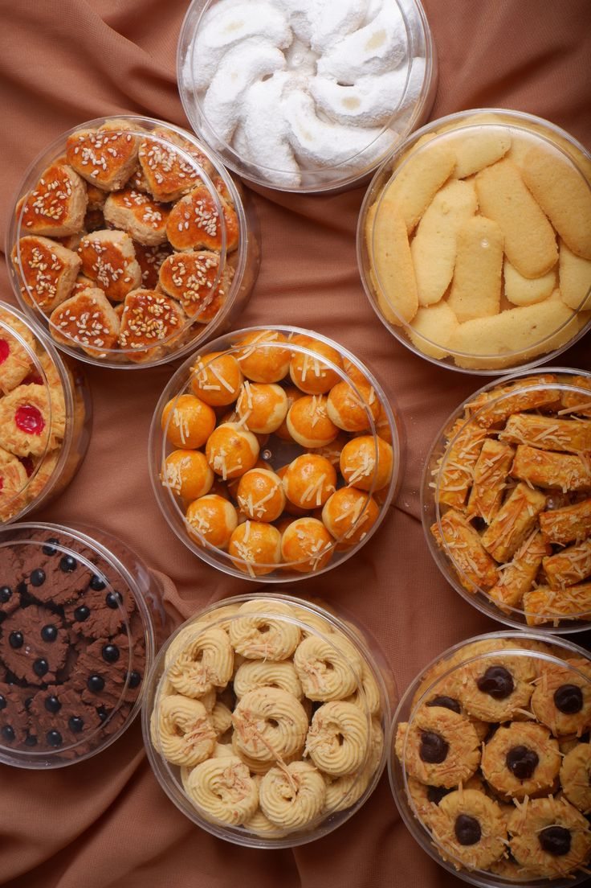
Pemilik: Indo Upe
Jenis Usaha: Pembuatan Kue Kering
Alamat: BTN Pondok Indah, Soreang
Telepon: 0853 4141 0308
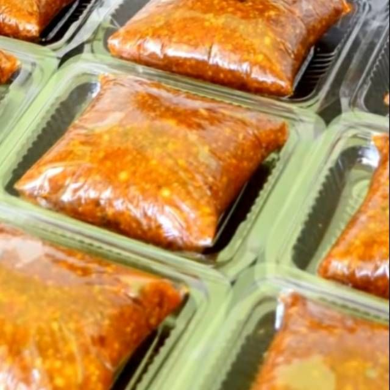
Pemilik: Ririn Sinawati
Jenis Usaha: Pembuatan Bumbu Pecel
Alamat: BTN Pondok Indah, Soreang
Telepon: 0813 4372 3944
Pemilik: Wahidah
Jenis Usaha: Pembuatan Kue Tradisional
Alamat: BTN Pondok Indah, Soreang
Telepon: 0812 4454 6729